个人总结:springboot是一个开发更加便捷的spring的技术框架,通过引入启动器便可以快捷的让spring框架和其他框架进行整合,
springboot很容易上手,其内部对各个框架(不是所有)都有默认的配置,通过引入启动器,springboot会加载对应框架的默认配置,达到快速整合框架的效果,大大缩减了搭建环境的时间.
在springboot项目中的resources文件加下,可以编写application.properties或者application.yml或者application.yaml文件来修改springboot对各个框架的默认配置,来实现我们的需求.
部分名词:
引导类: 就是springboot项目的启动类
启动器: 即springboot整合后的框架的坐标,
springboot的很重要的一点:约定大于配置
1.1.什么是SpringBoot
SpringBoot是Spring项目中的一个子工程，与我们所熟知的Spring-framework 同属于spring的产品:
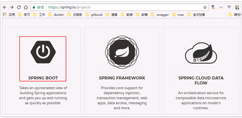
我们可以看到下面的一段介绍：
Takes an opinionated view of building production-ready Spring applications. Spring Boot favors convention over configuration and is designed to get you up and running as quickly as possible.
翻译一下：
用一些固定的方式来构建生产级别的spring应用。Spring Boot 推崇约定大于配置的方式以便于你能够尽可能快速的启动并运行程序。
其实人们把Spring Boot 称为搭建程序的脚手架。其最主要作用就是帮我们快速的构建庞大的spring项目，并且尽可能的减少一切xml配置，做到开箱即用，迅速上手，让我们关注与业务而非配置。
1.2.为什么要学习SpringBoot
java一直被人诟病的一点就是臃肿、麻烦。当我们还在辛苦的搭建项目时，可能Python程序员已经把功能写好了，究其原因注意是两点：
项目各种配置其实是开发时的损耗， 因为在思考 Spring 特性配置和解决业务问题之间需要进行思维切换，所以写配置挤占了写应用程序逻辑的时间。
项目的依赖管理也是件吃力不讨好的事情。决定项目里要用哪些库就已经够让人头痛的了，你还要知道这些库的哪个版本和其他库不会有冲突，这难题实在太棘手。并且，依赖管理也是一种损耗，添加依赖不是写应用程序代码。一旦选错了依赖的版本，随之而来的不兼容问题毫无疑问会是生产力杀手。
而SpringBoot让这一切成为过去！
Spring Boot 简化了基于Spring的应用开发，只需要“run”就能创建一个独立的、生产级别的Spring应用。Spring Boot为Spring平台及第三方库提供开箱即用的设置（提供默认设置，存放默认配置的包就是启动器starter），这样我们就可以简单的开始。多数Spring Boot应用只需要很少的Spring配置。
我们可以使用SpringBoot创建java应用，并使用java –jar 启动它，就能得到一个生产级别的web工程。
1.3.SpringBoot的特点
Spring Boot 主要目标是：
更多细节，大家可以到官网查看。
|
<parent> <groupId>org.springframework.boot</groupId> <artifactId>spring-boot-starter-parent</artifactId> <version>2.1.3.RELEASE</version> </parent>
|
父maven中规范了大部分坐标的版本,所以添加依赖时可以不写,默认使用父工程的,但是mysql驱动版本最好自己定义,默认的mysql版本太低,
|
<dependencies> <dependency> <groupId>org.springframework.boot</groupId> <artifactId>spring-boot-starter-web</artifactId> </dependency> </dependencies> |
需要注意的是，我们并没有在这里指定版本信息。因为SpringBoot的父工程已经对版本进行了管理了。
这个时候，我们会发现项目中多出了大量的依赖：
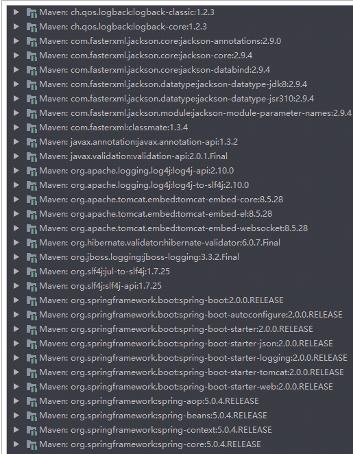
这些都是SpringBoot根据spring-boot-starter-web这个依赖自动引入的，而且所有的版本都已经管理好，不会出现冲突。
如果有需求可以设置jdk版本
|
<properties> <java.version>1.8</java.version> </properties> |
|
@SpringBootApplication public class Application { public static void main(String[] args) { SpringApplication.run(Application.class, args); } } |
启动器类不能直接写在java目录下,
启动器默认加载同包及子包下的内容
所以,启动器的位置,自己看着办 ^_^
基本环境已经搭建好,
剩下的就是像以前一样编写controller层和界面
界面一般放在resources文件夹下的static目录下进行加载
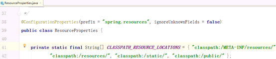
进入ResourceProperties类查看
springboot默认会加载图片中的四个路径的界面文件
除了使用springmvc的注解外,spring还提供了更加简洁的注解(将源springmvc的一个或多个注解整合成一个)
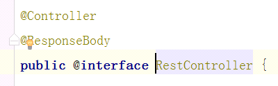
@RestController注解便代表Controller和ResponseBody注解的同时使用
接下来，我们运行main函数，查看控制台：
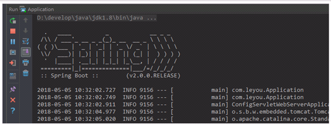
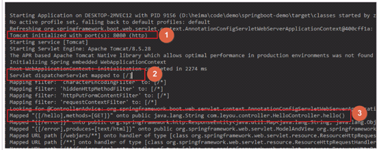
并且可以看到监听的端口信息：
打开页面访问：http://localhost:8080/hello
测试成功了！
快速入门只能算是快速了解springboot,真正的快速开发一般使用项目模板
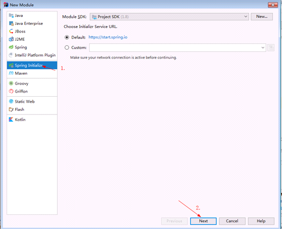
接着填写自己项目的信息
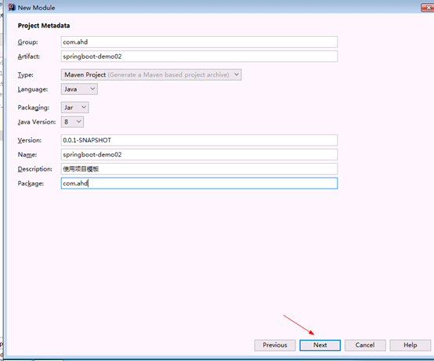
这里选用lombok工具
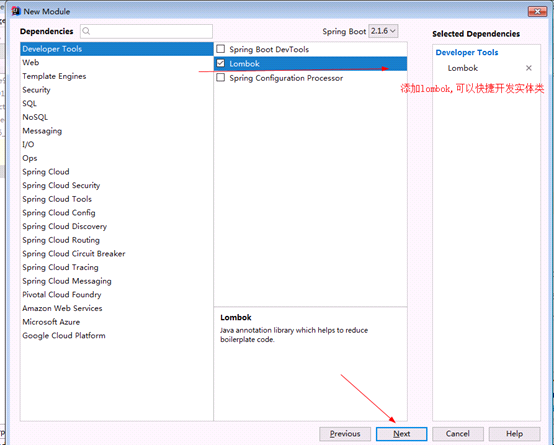
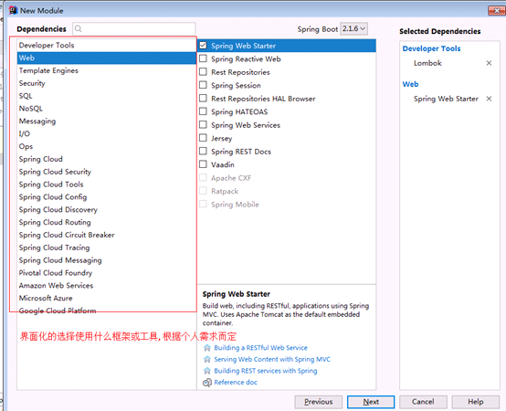
next---》finish完成工程创建
官方文档说明:
拦截器不是一个普通属性，而是一个类，所以就要用到java配置方式了。在SpringBoot官方文档中有这么一段说明：
If you want to keep Spring Boot MVC features and you want to add additional MVC configuration (interceptors, formatters, view controllers, and other features), you can add your own @Configuration class of type WebMvcConfigurer but without @EnableWebMvc. If you wish to provide custom instances of RequestMappingHandlerMapping, RequestMappingHandlerAdapter, or ExceptionHandlerExceptionResolver, you can declare a WebMvcRegistrationsAdapter instance to provide such components.
If you want to take complete control of Spring MVC, you can add your own @Configuration annotated with @EnableWebMvc.
翻译：
如果你想要保持Spring Boot 的一些默认MVC特征，同时又想自定义一些MVC配置（包括：拦截器，格式化器, 视图控制器、消息转换器 等等），你应该让一个类实现WebMvcConfigurer，并且添加@Configuration注解，但是千万不要加@EnableWebMvc注解。如果你想要自定义HandlerMapping、HandlerAdapter、ExceptionResolver等组件，你可以创建一个WebMvcRegistrationsAdapter实例 来提供以上组件。
如果你想要完全自定义SpringMVC，不保留SpringBoot提供的一切特征，你可以自己定义类并且添加@Configuration注解和@EnableWebMvc注解
总结：通过实现WebMvcConfigurer并添加@Configuration注解来实现自定义部分SpringMvc配置。
首先我们定义一个拦截器：
|
package com.ahd.interceptor;
|
编写类实现接口WebmvcConfiguration并且加上注解@Configuration,
|
@Configuration
|
SpringBoot为我们提供了默认配置，而默认配置生效的步骤：
1）启动器
所以，我们如果不想配置，只需要引入依赖即可，而依赖版本我们也不用操心，因为只要引入了SpringBoot提供的stater（启动器），就会自动管理依赖及版本了。
因此，玩SpringBoot的第一件事情，就是找启动器，SpringBoot提供了大量的默认启动器
2）全局配置
另外，SpringBoot的默认配置，都会读取默认属性，而这些属性可以通过自定义application.properties文件来进行覆盖。这样虽然使用的还是默认配置，但是配置中的值改成了我们自定义的。
因此，玩SpringBoot的第二件事情，就是通过application.properties来覆盖默认属性值，形成自定义配置。我们需要知道SpringBoot的默认属性key，非常多，可以再idea中自动提示
略,通三
|
<dependencies>
|
|
mapper-locations: /com.ahd.dao/**
#bug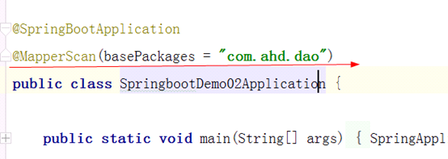
略